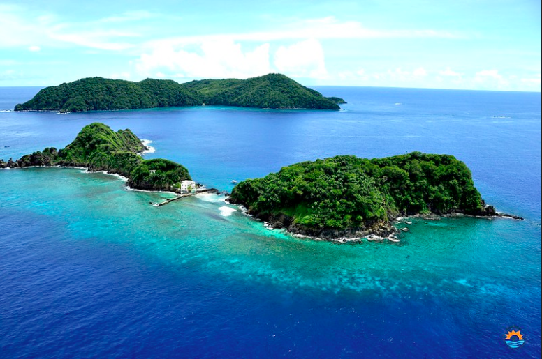

Trinidad and Tobago is located off the coast of Venezuela, in the Port of Spain. Trinidad and Tobago has a population of about 1.3 million people. It is the 175th largest nation in the world in land area. The primary language of Trinidad and Tobago is Engilsh while the major religons are Christianity, Hinduism, and Islam. The country is lead by President, Paula Mae Weekes.

Trinidad and Tobago have many beautiful places to visit, for example, Goat Island, Pigeon Point Beach, and many more!
For more information, you can visit the following website: Trinidad and Tobago. The True Caribbean.